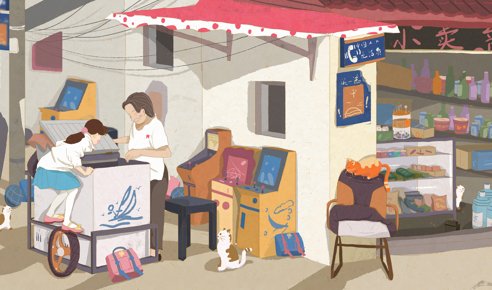

我的家庭成员:爸爸妈妈哥哥还有我四人组成的一个家庭。我的爸爸妈妈和哥哥分别经营着一个小超市，因而我觉得自己非常幸福，零食饮料应有尽有。我的爸爸是一位修东西大王，家里电器坏了他都会修，简直无师自通。妈妈是一位小厨师，做的饭菜那叫一个香。以至于我在学校都很想念他们的手艺和厨艺。 这就是我们的全家，我爱我的幸福家庭。 从前有一个人环游世界，去寻找世界上最完美的东西，到之后最后明白"家庭"才是他所要寻找的目标。 "家和万事兴"，世界上最美丽的作品就在每一个家庭里。